Pictorial
Honor Roll of World War II, Part
3
Marsico-Tamburro
Click on any photograph to view a larger image.
To
purchase a high-resolution print of any listed photograph on this page
without the visible watermark, E-Mail
Us
Use the image ID Example: PO1.1023
| E-Mail Us | Phone: 330.544.2143 | Mail: PO Box 368 Niles, Ohio 44446 |
News
Tours
Individual Membership: $20.00
Family Membership: $30.00
Patron Membership: $50.00
Business Membership: $100.00
Lifetime Membership: $500.00
Corporate Membership:
Call 330.544.2143
Do you love the history of Niles, Ohio and want to preserve that history and memories of events for future generations?
As a 501(c)3 non-profit organization, your donation is tax deductible. When you click on the Donate Button, you will be taken to a secure Website where your donation will entered and a receipt generated.
Pictorial
Honor Roll of World War II,
Part 1 Pictorial
Honor Roll of World War II,
Part 2 Pictorial
Honor Roll of World War II,
Part 3 Pictorial
Honor Roll of World War II,
Part 4
|
 Marsico-Matthews |
 William Matthews-McCormick |
 Robert
McCormick-McGuire Robert
McCormick-McGuire |
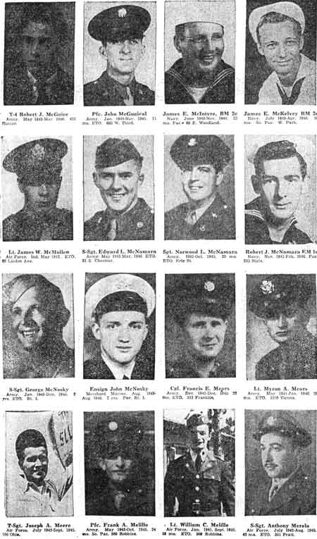 Robert McGuire-Merola |
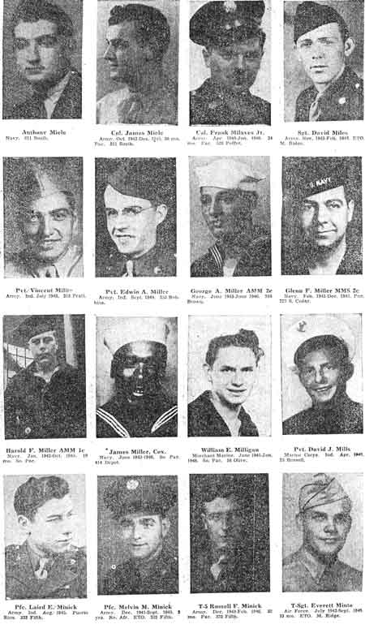 Miele-Minto |
 Miranda-Morabito |
 John Morabito-Moynihan |
 Murray-Naples |
 Ralph Naples-Neely |
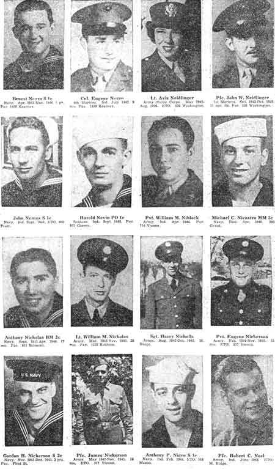 Negro-Neel |
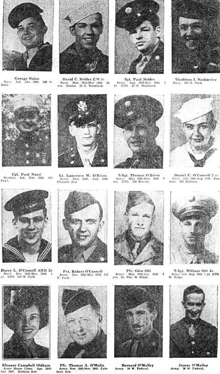 Nolan-O'Malley |
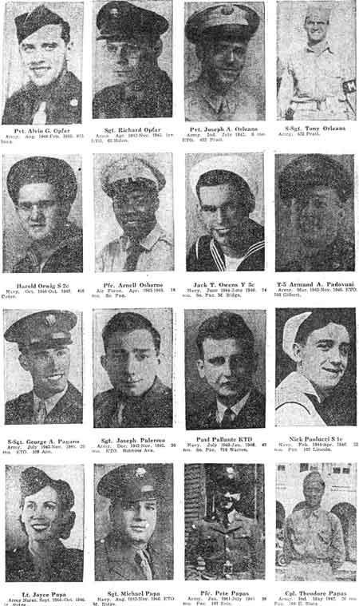 Opfar-Papas |
 Pape-Passaro |
 Paton-Pavalik |
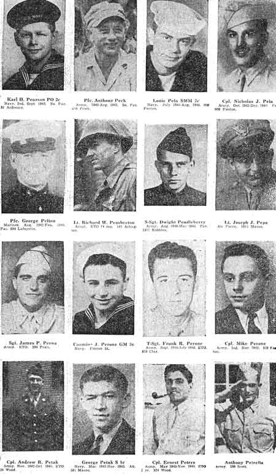 Pearson- Petrella |
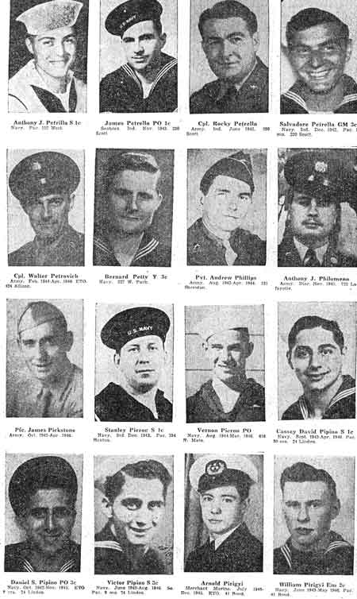 Anthony Petrella-Pirigyi |
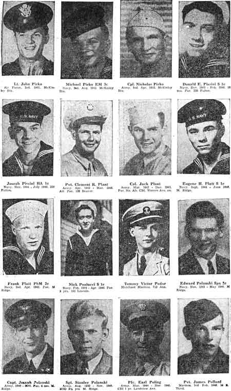 Pirko-Pollard |
 Pollack-Powers |
 Joseph
Powers-Raftry Joseph
Powers-Raftry |
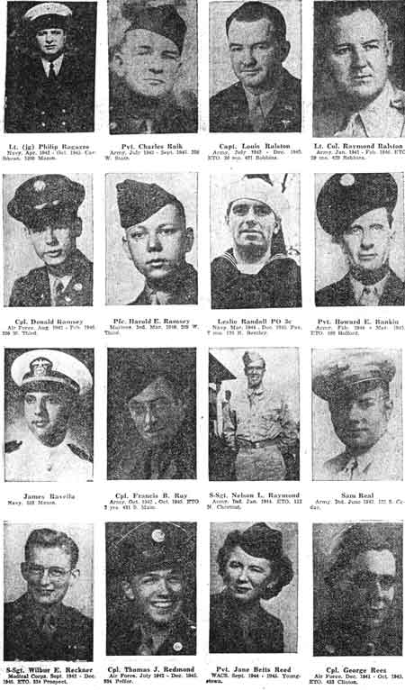 Ragazzo-Rees |
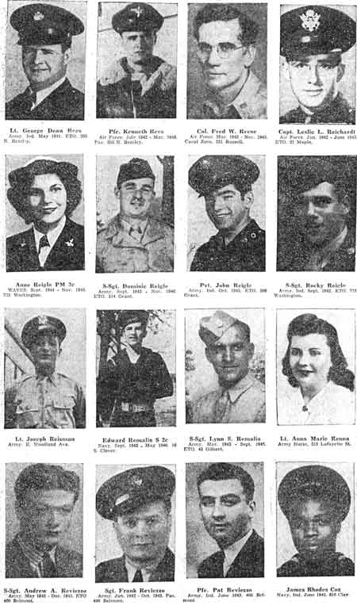 George Rees-Rhodes |
 Rich-Roberts |
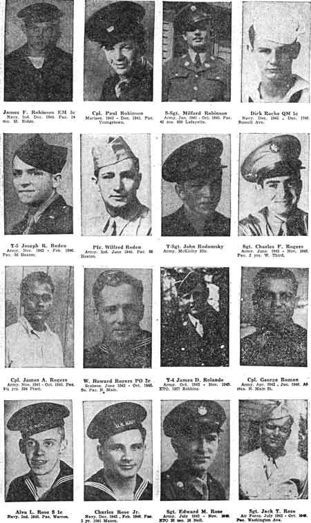 Robinson-Rose |
 Robert Rose-Rounds |
 Rowbotham-Russo |
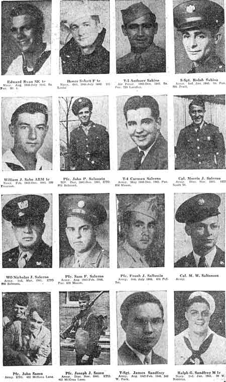 Ryan-Sandfrey |
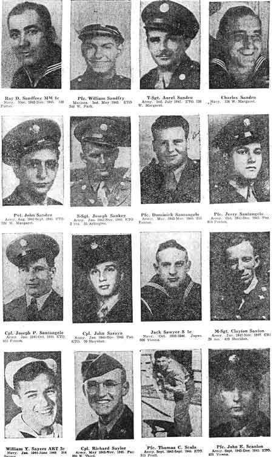 Ray Sandfrey-Scanlon |
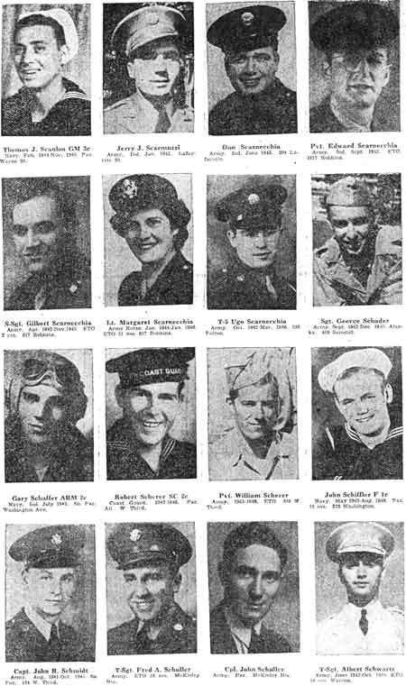 Thomas Scanlon-Schwartz |
 Schwieckert-Seisenger |
 Seitz-Shaffer |
 Shahaden-Shelar |
 Sheldon-Simeon |
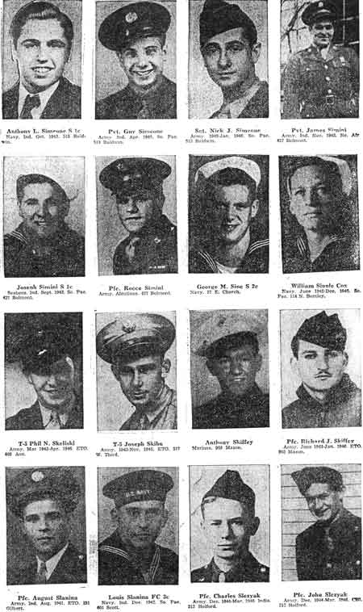 Simeone-Slezyak |
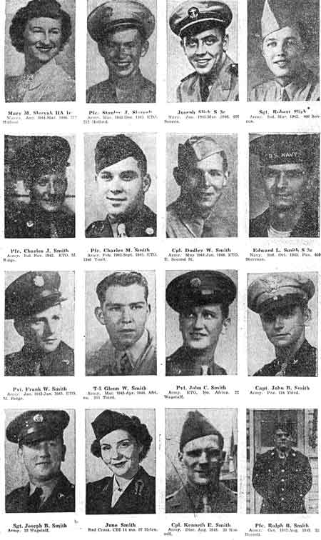 Mary Slezyak-Smith |
 Ray Smith-Soda |
 Sohaydu-Stabile |
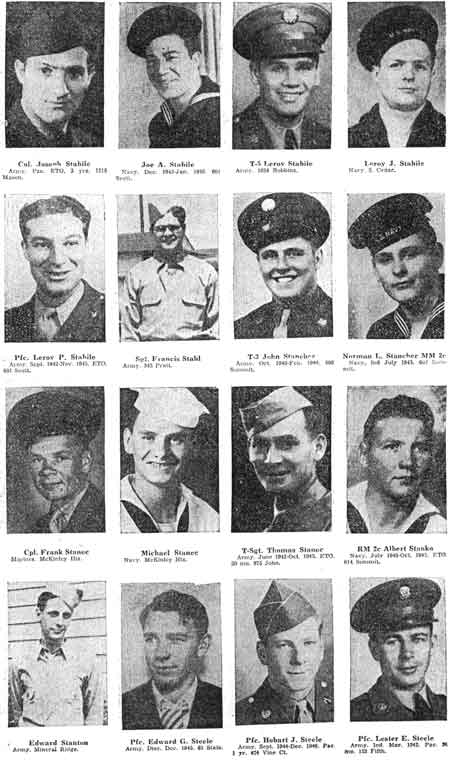 |
 Myra Steele-Sudano |
 Sullivan-Swaney |
 Edward Swaney-Tamburro |
Pictorial
Honor Roll of World War II,
Part 1 Pictorial
Honor Roll of World War II,
Part 2 Pictorial
Honor Roll of World War II,
Part 3 Pictorial
Honor Roll of World War II,
Part 4
|
{kind=link}
{kind=link}
{kind=link}
{kind=link}
{kind=link}
{kind=link}
{kind=link}
{kind=link}
{kind=link}
{kind=link}
{kind=link}
{kind=link}
{kind=link}
{kind=link}
{kind=link}
{kind=link}
{kind=link}